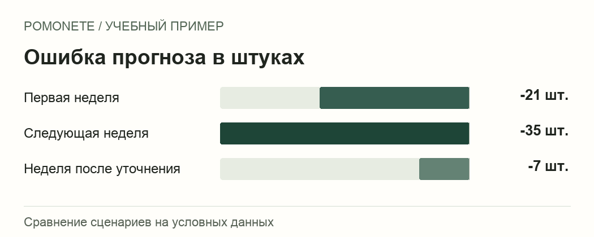

Прогноз систематически завышен. Как проверить аналитику Яндекс Маркета
Селлер оценивает ошибку в штуках и отличает разовый провал от смещения модели.
У магазина складных коробов три недели сохраняется запас сверх плана. Статистика Яндекс Маркета показывает продажи, а причина находится в сравнении факта с заранее зафиксированным прогнозом. Селлер может увидеть, в какую сторону ошибается метод и где эту ошибку нужно учитывать.
Что брать как прогноз недели
Сохраняйте значение до её начала и отмечайте входные условия. Версия после просмотра факта годится для нового периода. Чтобы оценить старый прогноз, сопоставьте его с фактом на исходных критериях. По количеству заказов и доставок возможны отдельные показатели точности.
Чтобы пересобрать расчёт «Ошибка прогноза в штуках» для своего магазина, перенесите в него исходные числа. В формуле A обозначает «фактически доставлено», B обозначает «план модели». Знак показывает направление разницы. Обе величины приводят к одному периоду и одной единице измерения до вычитания. Запишите рядом период и охват каждого среза. Если для одной строки известна только оценка, оставьте пояснение непосредственно рядом с ней: по итоговой цифре источник уже не восстановить.
Ошибка прогноза в штуках = A − B
| Условие | Фактически доставлено | План модели | Ошибка прогноза в штуках |
|---|---|---|---|
| Первая неделя | 131 | 152 | -21 шт. |
| Следующая неделя | 129 | 164 | -35 шт. |
| Неделя после уточнения | 141 | 148 | -7 шт. |

В сценарии «Первая неделя» в формулу подставляем фактически доставлено = 131, план модели = 152. Получается -21 шт.. Доступность товаров подтверждена. Остаток дожил до следующей недели.
В сценарии «Следующая неделя» в формулу подставляем фактически доставлено = 129, план модели = 164. Получается -35 шт.. В расчёте использовали среднее по акциям без отдельной поправки.
В сценарии «Неделя после уточнения» в формулу подставляем фактически доставлено = 141, план модели = 148. Получается -7 шт.. Прогноз обновили на основе обычных дней и отдельно пометили изменившуюся цену.
Если «Первая неделя» взять за исходную точку, «Следующая неделя» меняет показатель «ошибка прогноза в штуках» на -14 шт., а «Неделя после уточнения» на 14 шт.. Между двумя последними строками разница составляет 28 шт. при вычитании второй из третьей. Смотрите, какой именно вход изменился между строками. Если менялись объём и условия одновременно, итог сравнения относится ко всему сочетанию.
Запишите отдельно результат по обычным условиям «Первая неделя» (-21 шт.) и результат по уточнённым условиям «Неделя после уточнения» (-7 шт.). Если обе оценки получились по одному правилу, следующий вопрос касается исходных данных. Проверьте, сохраняется ли направление сравнения, если вернуть одно нестабильное условие к исходному. Сценарии полезно привязывать к операционному событию, по которому можно проверить, что новый режим действительно произошёл.
Что проверять при одинаковом знаке
Длительное завышение может появиться из-за завышенной истории, сезонного спада либо неверного перевода единиц. Ошибка может быть и у отдельных размеров, если менялся состав продаж. Покажите различие по товарным группам до проверки общего ряда.
Проверьте переход от первичной записи до показателя «ошибка прогноза в штуках». Колонки «фактически доставлено, план модели» могут поступить разными путями. Пройдите пример, где дата и сумма видны в исходнике, до последней строки. Для этого подойдут история продаж, журнал остатков и даты фактических приходов. Затем возьмите один случай с исключением и убедитесь, что результат можно восстановить по сохранённому правилу.
В историю поставок запишите обещанную и фактическую дату, момент доступности товара и интервал, в котором возник недозаказ. Разовые всплески спроса и дни без товара полезно отмечать отдельно. Когда данных мало, прогноз на ближайший горизонт лучше держать несколькими уровнями и привязывать каждый к своему действию. При высокой неопределённости небольшая партия с возможностью докупки даёт другую экономику, чем дешёвая крупная партия с долгим ожиданием.
Что сильнее всего меняет результат
Для «ошибка прогноза в штуках» начнём с результата -35 шт.. В «Следующая неделя» условно меняем «фактически доставлено», «план модели» по очереди. Шаг округляем до целой исходной единицы около 10%. Сравнение относится к одной строке расчёта. При сильной сезонной смене его полезно повторить и на второй базе с другим доступным объёмом.
- «Фактически доставлено» меняется с 129 на 142. При прежних остальных входах получается -22 шт., сдвиг составляет 13 шт..
- «План модели» меняется с 164 на 180. При прежних остальных входах получается -51 шт., сдвиг составляет -16 шт..
Самый заметный эффект дали данные по «план модели»: -16 шт.. Подготовьте второй тест с двумя входами, которые обычно меняются вместе. Сравните его с одиночной подстановкой. Различие покажет, хватит ли следить за одной строкой при выбранном действии или в отчёте понадобится связанная пара наблюдений.
Для контроля добавьте сумму абсолютных ошибок рядом с суммой ошибок со знаком. Одни превышения положительны, другие отрицательны, поэтому итоговое смещение способно выглядеть небольшим при нестабильной точности. На закупку влияют обе характеристики. Например, систематический излишек на 20 коробов за неделю вернётся в план остатка. Равные по величине ошибки в обе стороны потребуют проверять возможность небольшого пополнения среди недели.
Как изменить правило планирования
Сначала пересчитайте базовый спрос по сравнимым дням и попробуйте новый метод на прошлых окнах, не заглядывая в их будущие данные. Затем запишите обновлённый прогноз перед очередной неделей. Размер заказа можно менять осторожно, чтобы не создать новую недоступность.
На очередном пересмотре отметьте, какие сроки реализовались и какой был спрос в дни с доступным запасом. Оценку качества считают на событии, которое наступило после составления прогноза. Так проще отделить неточность метода от изменившейся доступности поставщика. Храните старые допущения: когда рынок меняется, восстановить причину размера закупки можно по сохранённым датам и объёмам.
При еженедельной сверке поставьте рядом сценарий «Неделя после уточнения» и реально наблюдавшееся значение. Если оценка стала систематически расходиться с результатом, назовите источник и предложите измерение меньшего масштаба. Для селлера Яндекс Маркета такой шаг важен, когда тот же показатель собирают разные сотрудники или несколько складов.